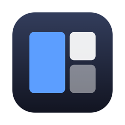
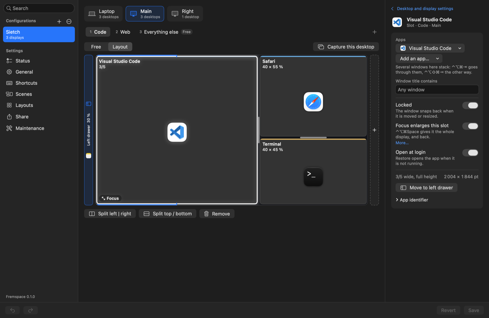

A layout for each desktop
Split a desktop into slots and say which apps live where. A window that opens goes to its slot, on its desktop, on its display.

FremspaceFremspace gives every desktop of every display a layout of slots. Apps open in their slot, stay there, and are all back where they were after a restart.
Free and open source. macOS 13 or later, Apple silicon and Intel. Sending windows between desktops needs macOS 26.4.
Drag a window away from its slot and let go.
A layout is a few slots drawn on a desktop, each with the apps that live in it. From then on Fremspace does the arranging.
Split a desktop into slots and say which apps live where. A window that opens goes to its slot, on its desktop, on its display.
One shortcut gives a slot the whole desktop. The same shortcut puts everything back.
⌃⌥⌘Space
Several windows share a slot. A shortcut goes through them, and a mark says which one is in front.
⌃⌥⌘⇥
Windows parked off the side of a display, slid in when you need them: your notes, a chat, a calendar.
⌃⌥⌘Lleft⌃⌥⌘Dright
At login Fremspace opens the apps that have a slot and puts every window back, on the right desktop.
The desk, the laptop alone, another office: Fremspace applies the configuration that matches the displays connected. A travel version turns the slots of the big displays into desktops of the laptop.
The palette knows where every window is, on every desktop. Type a few letters and press Return. Without typing anything it is a switcher: the window you had before is already selected.
⌃⌥⌘Kopens it
This one is a drawing, and it takes real typing: click the field.
A scene is a named set of desktops that several displays show together. Showing it switches every display it names at once. A display it does not name keeps what it shows.
On each display a scene can also put a slot in Focus and open or close a drawer, and it opens its apps that are not running. The editor makes one from what the displays show now.
open -g fremspace://scene/CouncilmacOS never tells you the name of a desktop. When a display changes desktop, Fremspace hangs its name from the notch for a moment, or under the menu bar on a display without one.
Rest the pointer on the notch and the map of every desktop opens. A click takes you there. The notch at the top of this page works the same way.
Every command has a shortcut and every shortcut can be changed. They all begin with ⌃⌥⌘ by default.
Three keys are a handful. Fremspace can make Caps Lock stand for them, with nothing else to install.
Off unless you switch it on. While it is on, Caps Lock no longer locks capitals, and the mapping is removed when Fremspace quits.
Choose a command to see its keys. The keyboard also lights up under your own.
Open the editor from the menu bar. Make a configuration from the connected displays, split a desktop into slots, choose the apps, Save. Nothing changes until you save.
open -g fremspace://desktop/Web
A window manager sees and moves every window on your Mac. Here is what Fremspace needs and what it does with it.
That is the permission macOS gives to apps that read and move other apps' windows. Fremspace asks for it at first launch and does nothing without it. One option, window previews, needs Screen Recording as well: it is off unless you switch it on, and macOS asks only then.
There is no account and no telemetry. The one request it makes is for its own updates, about once a day, and you can switch that off. Your layouts are one JSON file in your Library folder.
macOS has no public way to send a window to another desktop. Fremspace uses the window server's own calls for that, so a macOS update can break it until Fremspace is updated. Its Status page tells you when that happens.
For the same reason. The download is signed and notarized by Apple, and the source is there to read.
Free and open source under the MIT license. Version 0.1.3, macOS 13 or later, Apple silicon and Intel. Sending windows between desktops needs macOS 26.4 or later.
It lives in the menu bar.
It takes the Command Line Tools and nothing else.
git clone https://github.com/fdussert/fremspace.git
cd fremspace
scripts/build.sh && open dist/Fremspace.app